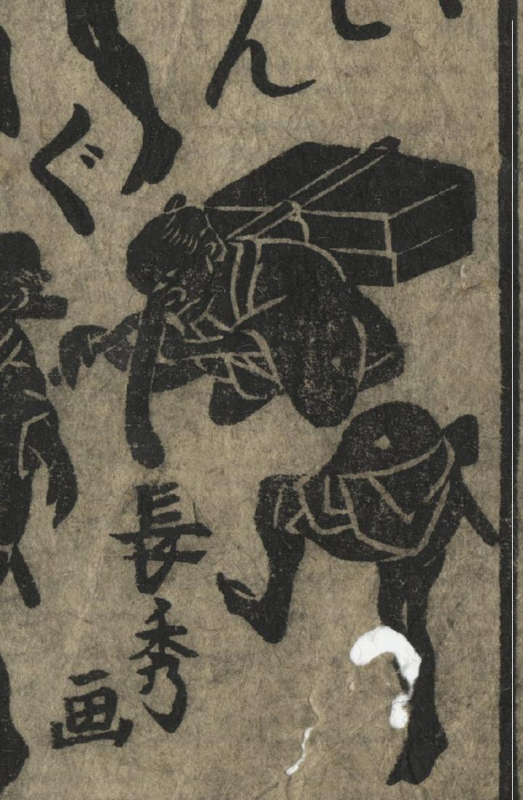

天狗の嫁入り行列に連なっている天狗。箱をかついでいる。
著作者：長秀／出典：親書誌：U426_nichibunken_0389：新工夫てんぐのよめいり[か]げゑまはりとうろう；シン クフウ テング ノ ヨメイリ カゲエ マワリ トウロウ／日付：2015／資源識別子：U426_nichibunken_0389_0001_0007
Copyright (c)2010- International Research Center for Japanese Studies, Kyoto, Japan. All rights reserved.